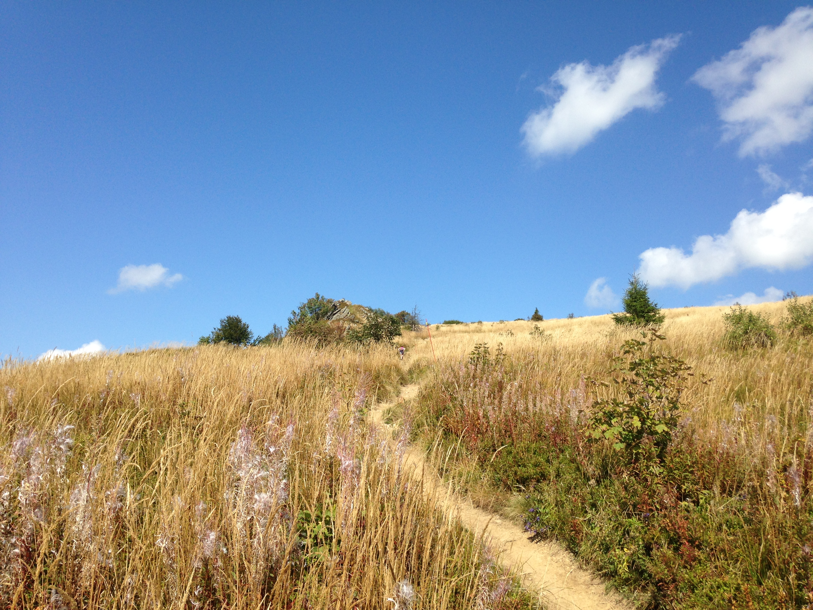
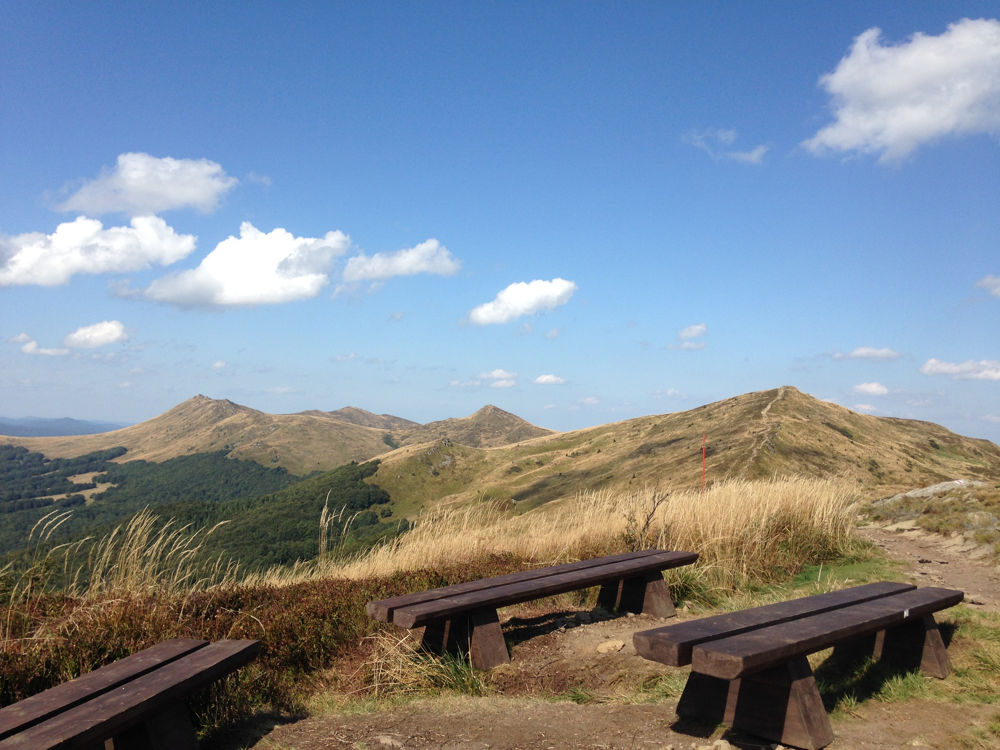

Bieszczadzkie szlaki szczytami.

Bieszczady to czas dla siebie. Odpoczynek ciała i ducha... dobrze gdy z widokiem na Smerek.

Bieszczady kryją się za mgłą. Jeśli nie maszerowaliście we mgle to znaczy, że nie zaznaliście Bieszczadów w całości.

Wrzesień w słońcu - puste szlaki i piękna pogoda.
Wrzesień w słońcu - puste szlaki i piękna pogoda.

Dosłownie - puste szlaki.
Dosłownie - puste szlaki.